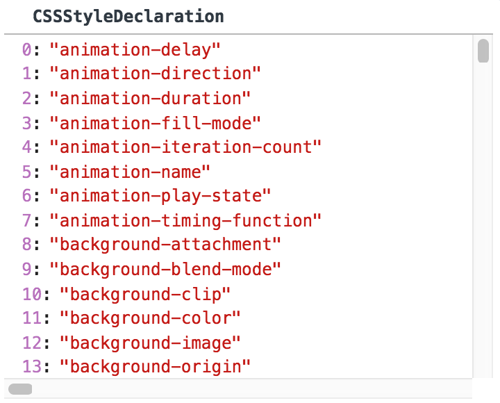
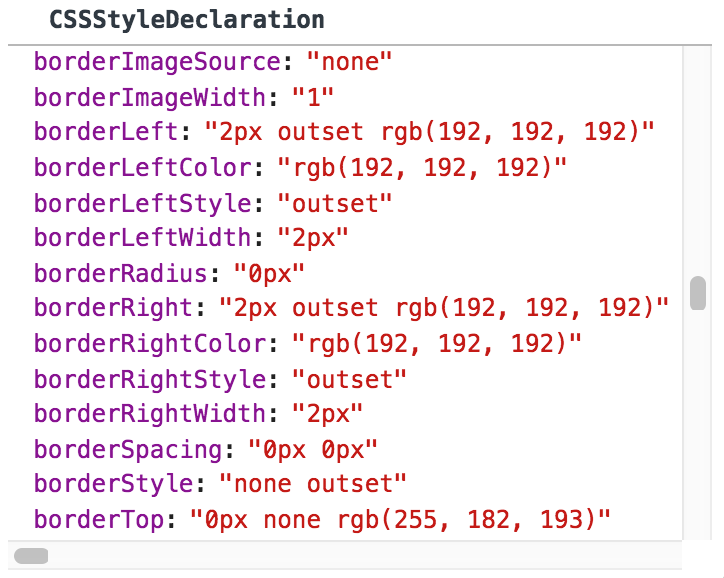
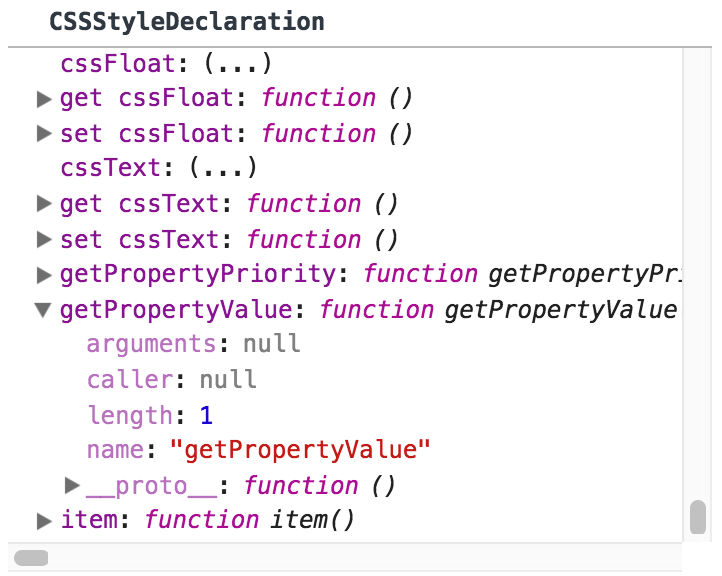

原生 JavaScript 获取元素的样式信息
getComputedStyle VS style
GetComputedStyle() 方法
一、定义
我们来看看 w3school.com 对getComputedStyle()的定义：
The getComputedStyle() method gets all the actual (computed) CSS property and values of the specified element. The computed style is the style actually used in displaying the element, after "stylings" from multiple sources have been applied. Style sources can include: internal style sheets, external style sheets, inherited styles and browser default styles. The getComputedStyle() method returns a CSSStyleDeclaration object.
getComputedStyle()获取到的是当前元素最终展示出来的样式属性和值(即样式的最终计算结果)。
例子:
<!-- html -->
<div id="test" style="color: lightpink;">Test</div>
var el = document.getElementById("test");
<!-- script -->
var prop = window.getComputedStyle(el, null).getPropertyValue("background-color");
document.getElementById("demo").innerHTML = prop;
结果:
The computed color for the test button is:
点击 "Test Button" 可以输出当前按钮的文本颜色色值。
二、语法
window.getComputedStyle(element , pseudoElement);
window.getComputedStyle('元素' , '伪类');
例如：
window.getComputedStyle(el , ":after");
window.getComputedStyle(el , null);
第一个参数element必填,该元素为我们需要得到样式信息的目标元素。第二个参数可选,也可置为null。
该方法返回的结果为一个 CSS样式声明对象:
Return Value: A CSSStyleDeclaration object containing CSS declaration block of the element.
三、返回值(The CSSStyleDeclaration object)
getComputedStyle()方法在谷歌浏览器中返回值如下:
- 
- 
- 
即getComputedStyle()返回值包含该元素所有样式属性名的数组、样式属性对象及获取特定样式的方法。
w3schools 给出了更多的关于该对象用法的例子:
1、获取某个元素所有的最终样式:
function getAllStyles(){
var elem = document.getElementById("test");
var txt;
var cssObj = window.getComputedStyle(elem, null);
for (i = 0; i < cssObj.length; i++) {
cssObjProp = cssObj.item(i)
txt += cssObjProp + " = " + cssObj.getPropertyValue(cssObjProp) + "<br>";
}
document.getElementById("demo2").innerHTML = txt;
}
查看该例子的输出结果:点这里
2、获取某个元素第一个字符的字体大小(使用伪元素first-letter):
function getFirstFontSize(){
var elem = document.getElementById("test");
var theCSSProp = window.getComputedStyle(elem, "first-letter").getPropertyValue("font-size");
document.getElementById("demo").innerHTML = theCSSProp;
}
查看该例子的输出结果:点这里
DOM 对象 style
获取特定元素的样式对象:
document.getElementById('myH1').style;修改已有样式对象的属性
document.getElementById('myH1').style.color = "red";创建一个 <style> 元素:
var x = document.createElement('style');样式对象属性名称,采用样式属性的驼峰写法: backgroundColor、marginRight。
document.getElementById('myH1').style.backgroundColor = "red";